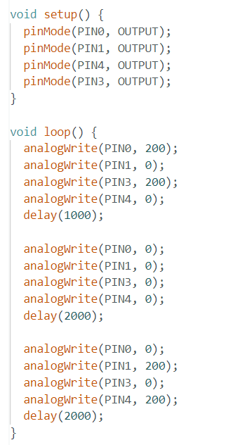
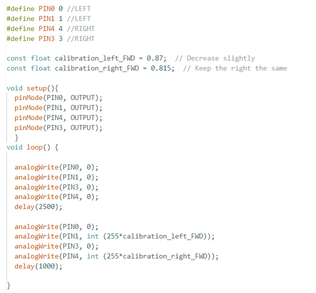

Lab 4 : Motors and Open Loop Control
Prelab
Before lab, I planned out the connections between the Artemis, the motor drivers, and the battery.
Diagram of intended connections between the motor drivers, Artemis, and battery:
Battery Discussion
The reason why we are powering the Artemis and the motor drivers/motors from separate batteries is because the motors draw more power than the Artemis. By separting the paths of the power, we can ensure that the Artemis will not be affected by the noise from the motors.Task 1: PWM signals
Before soldering the motor drivers, I wanted to ensure that the motors worked. I tested on of the motors with a PWM signal.
I powered on the pins LOW and the other pin HIGH.
A reasonable settings for the power supply would be 3.7V given that is the voltage of the battery that we are using.
In order to do these tests, I hooked the Vin and the GND to the power supply. I then connected the outs the BOUT1 and AOUT1 to the ground of the ocsilloscope probe, and the probe to
the BOUT2 and AOUT2 to the probe of the ocsilloscope. This is shown below!
Code used to test above:
Task 2: Take your car apart!
I forgot to take a picture when my car was empty, I got too excited to start working on it. But here is a picture of the car with its control PCB still attached.
Task 3: Motors
Frist, the wheels on each sides were tested individually. I supplied voltage to the motor driver with the power supply. The PWM values used to test if the wheel were function was both 200. Videos of the wheels spinning on each side are shown below. Also, for the code I used the the same code used in the PWM signals, but I did tweak it becuase I got a curious.
Left Wheel
I got a little carried away, and I ended up pausing the spinning then continuing which is shown in the video.Code used to test above:
Right Wheel
Code used to test above:
Both Wheels
Code used to test above:
Task 4: Motors powered by battery
Similar to the previous task, I tested the wheels with the battery. I used the same PWM values of 200. I also used similar code above, but for both wheel I tweaked it a little a bit go forward, pause, and then backwards.
Left Wheel
Right Wheel
Both Wheels
Code used to test above:

Task 5: Components secured in the car
Before driving the car on the ground before soldering, I wanted to make sure that the components could fit in the car, and allows me the ease to move around it needed.
I placed the IMU on the front of the car that is on a flat surface to ensure that is leveled.
I placed the Artemis on the back of the car and the motor drivers for ease and that the wires were not too long. Also, I did consider placing in the front, but the IMU made more sense in the front.
Another component that I placed in the back of the car was the battery that connects to the Artemis.
One regret that I do have is that I made the wires a little to long, but then again it doesn allow me to move stuff around if I need to move it.
Video of the car driving around:
Task 6: Lower Limit in PWM value
When the battery was not fully charged, the car was able overcome the static friction and move forward at a minimum PWM of 35 and required 70 PWM for on-axis turning. When fully charged, the left wheel required a minimum PWM of 30 to move, while the right wheel required 55 PWM, resulting in the car not moving in a straight line at these values.
Task 7: Calibration
As mentioned above in the previous task, the car was not able to move in a straight line at the minimum PWM values given that the motors are running at different PWM.
The calibration factors for forward motion were determined through iterative testing by observing the car's movement. If the robot veered left or right, adjustments
were made to the scaling factors to balance the wheel speeds. The left wheel's PWM is multiplied by 0.87 to slightly reduce its speed, while the right wheel's PWM remains at 0.815.
These factors, when multiplied by 255, help the car move more consistently in a straight line. As shown below:
Code used shown below:

Task 8: Open-loop/h3>
I had a tough time getting the car to go backwards straight, so I calibrated that as well through many iterative testing by observing the car's movement.
Also, I made the car go forward and backwards in a straight line. I also made the car turn left and right. However, the video got cut in two parts becuase my videographer (my friend) accidentally stopped recording.
Code used shown below:
Level 5000: analogWrite Frequency Discussion
The frequency measured from the oscilloscope was 183.44 Hz, corresponding to a period of 5.45 ms. In contrast, the ToF sensor which was generating data at approximately 1 Hz. However, now that I think about this, the time to generate must be wrong, it should not take that long. Regardless, the ToF sensor's update rate is significantly lower than the frequency generated by analogWrite(), meaning the PWM signal is fast relative to the sensor data rate. This means that the motors receive a rapid signal to operate smoothly. If we were to manually configuring timers to generate a faster PWM signal would be benefcial given that it would allow for more motor control and respoonse.
Level 5000: Lower Limit PWM And Open Loop Control/h3>
Using the values that I found perviously, I just used the same values to make the car go forward at a low PWM. Using those values, showed me that that was the slowest that the car could go forward without stopping. The robot is able to reach the slow setting pretty quick and overcomes static friction. However, if I lowered the PWM value any lower, the robot would not be able to move.
Conclusion/Reference
Overall, the lab was really long. I did enjoy soldering and being able to plan about where the wires were going to go. I did feel that at times the calibration was tedious, but it was worth it in the end becuase I got it to go straight!
I am quite proud of what I was able to accomplish, especially given that I did not have any complications with my motor drivers or the Artemis.
References:
I refernced Stephan and Mikayla's lab 4 to help me understand what was needed for this lab!